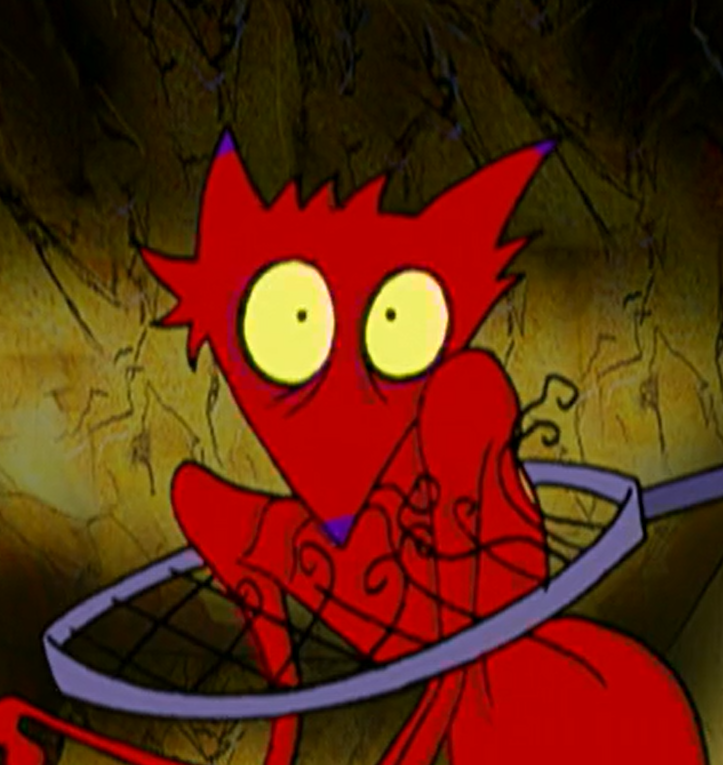
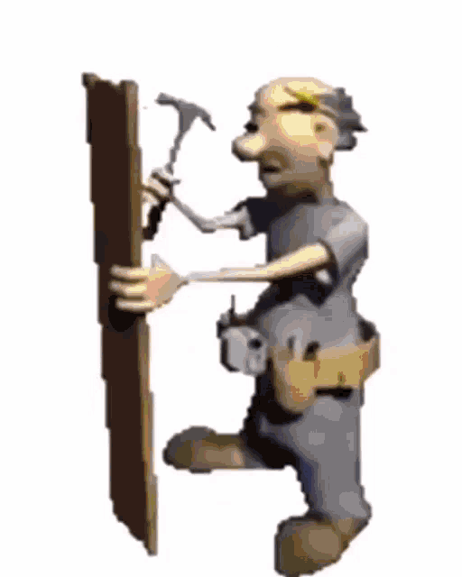
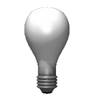

Hello!
Welcome to my site!
This is just a simple site for me to establish some sort of presence on the web and hopefully share some cool things.
|\ _,,,---,,_
ZZZzz /,`.-'`' -. ;-;;,_
|,4- ) )-,_. ,\ ( `'-'
'---''(_/--' `-'\_)
Controls
Windows and Taskbar
All windows can be moved and the buttons work.
In order to resize a window, you must drag it out of its default position. The new button that appears will snap the window back to its default position.
The taskbar shows open and minimized windows. If you click the logo in the corner, you can see closed windows.
If you hover over the clock, a calender will pop up. Navigating the months may allow you to see some special seasonal things such as Halloween mode.
Want to make your site look like this?Music Player
The left slider is for volume, the rest of the controls work as you would expect. You can choose from two albums and a playlist of random songs.
Cat
Click on the cat in the corner to wake it up
Add a cat to your siteMultiplayer Cursors
Those cursors you (may or may not) see around the page are other visitors to my site, if you press "t" then you can talk to them
Add Cursor party to your siteI am a ...
Teacher
I currently work as an instructor where I teach students k-12 about programming.
What I've taught
- Python
- Game Dev
- Web Dev
Programmer
I like making things and I like learning things so I became a programmer.
See what I've done
Student
Im currently working towards a Bachelors in Computer Science with Minors in Mathematics, Machine Learning, and Cybersecurity.
Likes
- Birds and other animals
- Music
- Art
- Computer
Dislikes
- Being Perceived
- Loud
- Cloud Computing

Updates
What have I done?
Status
How am I feeling?
This Website
The WebMaster
To Do
What am I planning?
- Paint
- Blog
- Project Showcase
- Art Corner
- "Ads"


Loading...
What Have I Been Listening To Recently?
Some music I like, have been listeing to a lot, or just want to share


Play a track to start the visualizer.
Wallpaper
Edit the wallpaper and theme for the site.
Sign My Guestbook
Not showing below?
Say hi, leave feedback, or just say some bullshit
Leave your site, please. I wanna see it
If you'd rather contact me directly, you can do so at avislibera2028@proton.me
Friends of the Site
Friends!
Cool Stuff
Some cool stuff I've found on the internet.
- Really Cool Awesome Site
- espy.world - amazing site and art
- scribblemakes.com - one of my favorite intros
- 404city.neocities.org - good site that inspired me a lot
- swiftyshq.neocities.org - big fan of this persons art
- 32teeth.nekoweb.org - great art and site